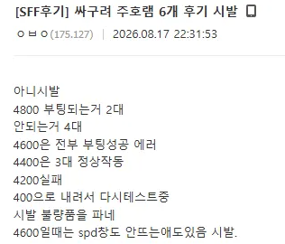
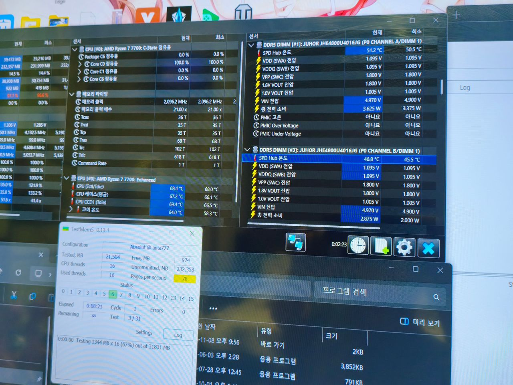

5600 이라고 샀는데, 5600은 커녕 4200으로 내려야 겨우 동작하고
그마저도 조금만 열오르면 바로 블스행...
그래도 반품은 요즘 잘받아주니 다행이라면 다행 ㅋㅋㅋㅋ
한줄요약 : 중국 반도체굴기 기사나오는거는 거르자 ㅋㅋㅋㅋㅋ


5600 이라고 샀는데, 5600은 커녕 4200으로 내려야 겨우 동작하고
그마저도 조금만 열오르면 바로 블스행...
그래도 반품은 요즘 잘받아주니 다행이라면 다행 ㅋㅋㅋㅋ
한줄요약 : 중국 반도체굴기 기사나오는거는 거르자 ㅋㅋㅋㅋㅋ
댓글
수집 당시 댓글 14개
밀프의초코밀크 · 3 일 전
저걸 속.. 아 아 돈이없구나
제보자 · 3 일 전
한 3-4년전에 삼성 DDR5가 저랬는데 평상시에는 문제없다가 과부하 작업 걸면 블루스크린
사자가라이언 · 2 일 전
재네는 그냥 블루 스크린이야. ㅋㅋㅋㅋ
히키도드립을보고싶어 · 2 일 전
ddr5 슬 사람들 사기 시작하고 거의 바로 터졌던거 기억나네 그때 ddr4 기적의 램오버로 이미지 좋아서 샀다가 많이 당함
빠빠양 · 2 일 전
저건 평상시는 커녕 부팅컷이잖아 ㅋㅋㅋㅋ
이보노 · 2 일 전
쟤네 장비도 없어서 수율 뽑아서 파는거도 저모양임 거르면됨
끼랑까랑 · 2 일 전
저걸 아이폰에 넣을라고 한단말이지..?
곽듣퍼 · 2 일 전
오...
주관적인요정 · 2 일 전
저거 마저도 못넣게 될수도
땀똔 · 2 일 전
그래도 대단한거아니냐? ASML없이 저기까지 간거면? 삼 하도 ASML없인 저기까지 못가자나 시진핑 개새끼
불멸의러너 · 2 일 전
흑흑.. 더욱 대단해져서 중국이 많아졌으면 좋겠습니다.
르웨이 · 2 일 전
asml은 없어도 삼하 기술도둑 애미뒤진새끼들이 있어서 저정도간거지
땀똔 · 2 일 전
요즘 기술도둑은 막지못한놈 잘못이 되가는것같음 도독노무시키들
MessiOfTFT · 2 일 전
팀쿡 ㅁㅊ색기